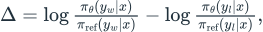
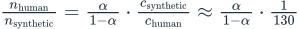

整体概括
比较的是同一笔标注费，不是同样多的样本
作者把同一笔标注预算分别投给人类偏好数据与合成偏好数据，再对同一基座先做 SFT、后做 DPO。回报不是考生答对多少题，而是固定裁判在测试模型回答与相应参考回答间选择模型回答的比例；任务为对话帮助性及论坛帖子摘要。
对照原文证据
We train each model with SFT followed by Direct Preference Optimization ( Rafailov et al., 2023 ) on either human or synthetic data, matching dollar cost across a range of budgets (Figure 1 ). We measure quality by win rate: a strong LLM judge compares each model response against a reference response, and we report how often the model’s response is preferred.合成先占优势，人工能否追上取决于任务
合成数据在低到中等预算段较快达到高胜率，随后收益趋平。部分帮助性配置下，人工数据投入大得多才追上或超过；摘要测试范围内没有追上。没有必要把这个结果压缩成“合成标签更准”，同样的钱在两路买到的样本量相差很大。
对照原文证据
Under a fixed annotation budget, synthetic preference data reaches high win rates at a small fraction of the cost of human data but saturates early. Human data needs more than an order of magnitude more budget to match or exceed it on helpfulness, and does not catch up on summarization within the budgets we test.Research gap
等样本比较回答不了采购问题
旧对照在样本数相同的前提下比较训练效果，但人工的每条成本远高于合成，同样样本数隐含不同投入。本文把控制量改为估算的美元预算，同时保留任务、基座与数据来源的分组；这是作者对既有工作的定位，不是本站对整个后训练文献的查新。
对照原文证据
Lee et al. (2023) took some initial steps to understand these differences by investigating the performance differences between models post-trained with the same number of human and synthetic data samples; however, their analysis failed to account for the interplay of cost and performance when using synthetic data compared to human data for training.We instead hold the dollar budget fixed and compare human and synthetic preference data as competing sources, which, to our knowledge, prior work has not done.不是同一批候选只换一种标注者
合成路线生成内容与候选回答，再另用模型给偏好；人工路线则从现成数据集取样。研究比较的是实际可选的两种数据来源，不是对同一输入、同批候选和同一格式只换标签生产者。基于这项比较，不能孤立归因给人或模型的标注方式。
对照原文证据
Human helpfulness preference data is drawn from the Anthropic Helpful and Harmless dataset (HH) ( Bai et al., 2022a ) , the Stanford Human Preferences dataset (SHP) ( Ethayarajh et al., 2021 ) , and HelpSteer3 ( Wang et al., 2025 ) .Synthetic generation follows a two-stage process: (1) diverse conversations are synthesized turn by turn, ending with two candidate responses for the final turn, and (2) a separate LLM judges these candidates to form a preference pair.First, SHP preferences are inferred from Reddit scores rather than made by instructed annotators: a comment counts as preferred when it outscores another on the same post despite being written later ( Ethayarajh et al., 2021 ) . Scores reflect visibility, humor, and community norms as well as helpfulness, a noisier proxy for the quality we evaluate. Second,算法主线

原图由 arXiv 加载；若未显示，可打开下方原图链接。
跟着原图读
- 先看哪里：把美元与样本图形分开
黄色预算桶沿蓝、绿箭头分出两路；蓝路是少量大圆，绿路是大量小圆。圆面积按图注表示单条成本，不是标签置信度。
- 能说明什么：两路均重复使用偏好数据
两支都经过 SFT 模型和 DPO，圆点池同时向这两个阶段供数；原图没有量化坐标或尺度，不能数圆点当作实际样本量。
不能推出什么：流程图不含胜率、不显示具体算力，也不证明任一路线的标签质量。
生成、清洗、训练标签与评测是四件事
合成路线用 persona 条件生成帮助性多轮或摘要单轮材料，对末轮重采样两条候选；格式清理、长度匹配和近重复过滤收敛到有效样本。独立的偏好裁判以随机位置重复投票、取多数作为标签，不能与最后在留出集打胜率的评测裁判混用。
对照原文证据
Synthetic generation follows a two-stage process: (1) diverse conversations are synthesized turn by turn, ending with two candidate responses for the final turn, and (2) a separate LLM judges these candidates to form a preference pair.To improve diversity, each initial human turn of the conversation is synthesized by conditioning the Llama-3.1-Tulu-3-8B-SFT generator on a randomly sampled persona drawn from the English-language subset of the Persona Hub dataset Chan et al. (2025) .To reduce judge noise and position bias, we follow Mahan et al. (2024) and sample 32 judgments with randomized candidate order; the majority-vote winner is labeled chosen and the other candidate rejected .Generated candidates and human-annotated sources are cleaned and filtered before training: programmatic role-tag correction and preamble removal for synthetic helpfulness generations, length filtering against the corresponding human dataset’s token-length distribution (reducing average output length from 227 to 180 tokens for helpfulness and from 488 to 402 tokens for summarization),一对偏好样本喂给两个顺序训练阶段
先以偏好对的 chosen 回答做监督微调；以后把这个检查点复制为冻结参考，当前策略继续用含 chosen 与 rejected 的偏好对优化。训练用 LoRA，不是把 SFT 与 DPO 损失联合最小化，也不为两个阶段独立购买两套标注。
对照原文证据
For each configuration tuple, we perform SFT followed by DPO ( Rafailov et al., 2023 ) using LoRA ( Hu et al., 2021 ) (implementation details in Appendix A.3 ). Following Rafailov et al. (2023) , the SFT dataset for each source and budget tier is constructed from the chosen field of the corresponding preference pairs, so that SFT and DPO training draw on the same underlying annotated data within each tier.Starting from the SFT checkpoint, which also serves as the frozen reference policy \pi_{\text{ref}} , we then train on the preference dataset \mathcal{D}_{\text{PFT}}=\{(x,y_{w},y_{l})\} of chosen ( y_{w} ) and rejected ( y_{l} ) responses with the DPO objective:where \sigma is the logistic function and \beta controls how far the policy may deviate from \pi_{\text{ref}} . Following standard practice, the two objectives are optimized sequentially rather than jointly.关键公式
先提高已选回答的似然，再学习相对偏好
监督阶段只观察被选中的回答；偏好阶段比较两个回答各自相对冻结参考的变化。这样，一个本来就比另一个更常见的回答不会单凭参考中的高概率获得更低的偏好损失；应跟踪策略和参考的同一段回答，而不是比较两个生成器的裸概率。
对照原文证据
Given the SFT dataset \mathcal{D}_{\text{SFT}}=\{(x,y_{w})\} , built from the prompt x and the chosen response y_{w} of each preference pair, we minimize the standard negative log-likelihood:Starting from the SFT checkpoint, which also serves as the frozen reference policy \pi_{\text{ref}} , we then train on the preference dataset \mathcal{D}_{\text{PFT}}=\{(x,y_{w},y_{l})\} of chosen ( y_{w} ) and rejected ( y_{l} ) responses with the DPO objective:where \sigma is the logistic function and \beta controls how far the policy may deviate from \pi_{\text{ref}} . Following standard practice, the two objectives are optimized sequentially rather than jointly.人工美元占优不意味着人工样本占优
样本比同时受分账比例与单价比控制。作者在帮助性上取一个近似成本比来说明，即使把多数预算给人工，训练池也可能由合成样本占多数；这条式子只算可买的量，不说明混合训练的梯度或质量如何随比例变化。
对照原文证据
While the exact ratio varies by task, human and synthetic data differ in per-sample cost by many orders of magnitude (§ 2.5 ). We show analytically that this asymmetry determines the shape of any naive dollar-proportional mixture between the two sources. Taking the helpfulness-specific ratio of approximately 130:1 as an illustrative example: at a given total budget B split as a fraction \alpha for human data and (1-\alpha) for synthetic data, the resulting sample-count ratio between the two sources iswhere c_{\text{human}} and c_{\text{synthetic}} are per-sample costs. Even a 90 / 10 budget split favoring human data yields a synthetic-to-human sample ratio of 14.4:1 ( \tfrac{0.9}{0.1}\cdot\tfrac{1}{130}\approx\tfrac{1}{14.4} ). Only at a 99 / 1 split does the ratio approach near-parity (~1.3 synthetic samples per human sample).SFT：先让策略学会生成 chosen
假设只有一条示例，策略在上下文中对整条 chosen 的概率为 0.25，负自然对数约为 1.386；提高到 0.50，损失约为 0.693。这个例子只为解释损失，不是论文测量。
符号与实现提醒
- x / y_w
- 提示和被选中的回答 token 序列
- πθ
- 当前生成策略，提供条件序列概率
- D_SFT
- 由偏好对 chosen 字段构成的样本集
实现时在 log 空间聚合对应回答 token，注意掩码和 padding；不要对 rejected 做这一步的监督。
DPO：把相对改进转成偏好损失
若单对样本的 Δ 为零，逻辑函数给 0.5，损失约 0.693；若 βΔ 为自然对数 ln 3，偏好概率为 0.75，损失约 0.288。平均是对偏好样本而非单独的 chosen。
符号与实现提醒
- σ
- 逻辑函数，输出无量纲概率
- β
- 缩放系数，原文附录给出训练取值
- Δ
- 下式定义的偏好对数比差
- D_PFT
- 提示、chosen、rejected 的三元组集
参考策略来自对应的 SFT 检查点且不更新；不要把评测裁判打分代入本式。
Δ：比较两条回答相对冻结参考的变化

示例：chosen 条件概率相对参考变为两倍，rejected 相对参考变为一半。两个 log 比之差为 ln 2 减 ln 0.5，即 ln 4；两条回答都按原比例变化则 Δ 为零。
符号与实现提醒
- πref
- 冻结的 SFT 策略
- y_w / y_l
- 同一提示下被选中和被拒绝的候选序列
- Δ
- 无量纲标量，每条偏好对各算一次
应在相同模板和响应边界下计算成对 log 概率，避免直接相除很小的序列概率。
预算分账如何变成数据集配比

按帮助性近似，用九成预算付人工、一成付合成，人工／合成样本比约为 9/130，亦即合成约为人工的 14.4 倍。成本比改变时应换回原式，末项近似不适用于所有任务。
符号与实现提醒
- α
- 总预算中人工份额，无量纲，比例式要求在零与一之间
- c_human / c_synthetic
- 人工与合成每条有效偏好对的估计美元成本
- n_human / n_synthetic
- 可购两个样本数量的比值
两端纯来源应直接用预算除以对应单价；精确做实际采购还要处理取整、失败、过滤与价格变化。
实验怎么做
预算轴是复制标注的成本模型
人工每对按 1.30 美元估算，仅计劳动，不代表每个历史数据集实际花了多少钱。合成把生成和偏好判决的 token 费用分摊到最终有效对，报告帮助性 0.0102、摘要 0.0194 美元每对；生成端借用同量级服务的单价。图中预算不包含训练与最终评测。
对照原文证据
We adopt $1.30 as a conservative point estimate at the low end of this range, and examine sensitivity to this choice in Figure 5 . This value should be read as an estimated replication cost, i.e., what a practitioner would plausibly pay to commission preference data of this type and scale, rather than a reconstruction of what each dataset historically cost.Finally, the estimate covers annotator labor only, matching the scope of the cost we measure for the synthetic pipeline.The synthetic per-sample cost accounts for both conversation generation with Llama-3.1-Tulu-3-8B-SFT and preference labeling with Qwen-3-32B . Since inference costs are hardware-dependent, we use current commercial per-token rates (see Appendix A.2 for full details on inference costs). Dividing total cost by the number of pairs in each final dataset gives a per-sample cost of $0.0102 for helpfulness and $0.0194 for summarization.Our generator, by contrast, is Llama-3.1-Tulu-3-8B-SFT ( Lambert et al., 2025 ) , which is not offered as a hosted API; we therefore use the rate for an equivalently-sized Llama-3.1-8B endpoint as a proxy for what serving our generator would cost.留出集和训练计算单独记录
帮助性用 Anthropic Helpful 测试集，摘要用 TL;DR 测试集，每个模型按 2048 条留出比较，并随机交换候选位置。训练主比较包括三个开放基座和未训练基线；附录列 Unsloth LoRA 超参，同一类训练配置共用，全部实验合计约 9,650 GPU·h，不计入横轴。正文给出代码入口。
对照原文证据
Each trained model is evaluated on a held-out, 2048-sample test set. For helpfulness, the samples are from the Anthropic Helpful test set, and for summarization, from the TL;DR test set. Using a gpt-oss-20b ( OpenAI, 2025 ) judge model, we compute the win rate of the trained model’s response against the reference chosen response from the test set, with candidate position randomized to control for position bias.We study these questions with three open base models ( Olmo-3-7B ( Ettinger et al., 2025 ) , Llama-3.1-8B ( Grattafiori et al., 2024 ) , and Qwen-2.5-7B ( Yang et al., 2024 ) ) and six datasets:All models are trained with LoRA using the Unsloth library. 3 3 3 https://github.com/unslothai/unsloth Table 3 reports the SFT hyperparameters and Table 4 the DPO (PFT) hyperparameters used across all (model, task, data source, budget) configurations. Table 5 shows the shared LoRA settings. All experiments were run on NVIDIA A40 (48GB) GPUs. In total, all experiments used approximately 9,650 GPU-hours.This section describes our fixed-budget setup: the experimental configurations and budget tiers, the human and synthetic data sources, the synthetic generation and labeling pipeline, the training procedure, and our protocols for measuring performance and deriving per-sample cost. 1 1 1 Code is available at https://github.com/shourikb/human-or-synthetic .两个裁判的一致性不是同一件事
偏好标签裁判的自一致率，帮助性为 91.9%，摘要为 88.1%，分母是对内重复投票再跨对平均。评测裁判另由两位论文作者在每项任务同一组 50 条比较上校验；例如摘要人工之间的原始一致率为 60%，Cohen κ 为 0.21。高自一致性不能替代独立人工评测。
对照原文证据
helpfulness summarization Self-consistency 91.9% 88.1% Agreement (%, Cohen’s \kappa ) A1–A2 80% (0.58) 60% (0.21) A1–J 72% (0.43) 78% (0.56) A2–J 76% (0.50) 66% (0.30) J–Q 84% (0.44) 66% (0.30)Table 1: Judge reliability. Self-consistency: mean fraction of the preference-labeling judge’s ( Qwen-3-32B ) 32 votes per pair matching the majority label, over all synthetic pairs before removing ties (105,882 helpfulness, 110,448 summarization). Agreement: raw percent agreement (Cohen’s \kappa ) between two human annotators (A1, A2) and the evaluation judge (J; gpt-oss-20b ) on the same 50 random win-rate comparisons per task.High self-consistency does not imply that an LLM judge reflects human preferences. We therefore validate our evaluation judge, gpt-oss-20b , against human labels: two annotators, both authors of this paper, independently label the same 50 randomly sampled win-rate comparisons per task (a trained model’s response versus the test-set reference), using the same instructions given to the judge提升与证据
人工摘要可先掉后回，但回升不等于赶上
摘要各基座的合成收益大多出现在最初 100 美元预算。表中 Qwen 摘要的未训练胜率为 0.41，少量 TL;DR 训练时跌至 0.20，至 6,000 条回到 0.42，至 12,000 条到 0.53，仍低于该基座的合成峰值。表内是两个种子均值，不是单样本成功概率。
对照原文证据
Figure 2 (bottom) shows the same comparison for summarization. Synthetic data checkpoints generally follow the helpfulness pattern: across model families, most improvement occurs within the first $100, followed by a plateau or mild decline.n Cost WR n Cost WR 0 $0 0.41 3,000 $3,900 0.31 76 $100 0.33 6,000 $7,800 0.42 153 $200 0.23 8,000 $10,400 0.45 230 $300 0.20 10,000 $13,000 0.52 307 $400 0.21 12,000 $15,600 0.53 769 $1,000 0.28Qwen-2.5-7B TL;DR (human) win rate (WR) by number of training samples ( n ) at $1.30 per sample, averaged over two seeds. Darker shading indicates higher win rate; n=0 is the untrained base model.Extending the human curve with four additional sample-count tiers (Table 2 ) shows that win rate then recovers steadily, returning to roughly its untrained level only after several thousand samples, but still remaining well below Qwen-2.5-7B ’s synthetic ceiling even at 12,000 samples ($15.6k).帮助性上的追赶依赖模型和人工数据源
在 13k 美元档，HelpSteer3 超出部分基座的合成峰值，但没有赶上 Olmo 的合成峰值；SHP 随预算停滞或下降，最终落到各基座未训练线下。联合做域限制、分数筛选和每帖上限未消除差距，这组控制不能告诉我们哪个因素单独产生问题。
对照原文证据
Human data becomes competitive only at the $13k tier, more than ten times the cost of the most expensive synthetic tier, and even there it surpasses the synthetic peak only for Llama-3.1-8B and Qwen-2.5-7B , falling short for Olmo-3-7B .As shown in Figure 2 (top), the human helpfulness sources diverge sharply: HelpSteer3 improves steadily with budget, while SHP plateaus or declines, dropping below the untrained baseline in every model family.These remedies, domain restriction, score filtering, and per-post capping, are applied jointly rather than individually. See § 3.5 for their effect on downstream model quality.混配没有在已测网格里兼取两侧上限
在 13k 美元总标注估价下，作者扫描人工占 95% 至 99% 的分账。Llama 摘要混合胜率在 0.52 至 0.56，纯合成峰值为 0.72，纯人工为 0.59；其中纯合成参照取自成本曲线的最佳点，不是另在同一高预算重训。两条虚线不能都当同价对照。
对照原文证据
Figure 3: Mixing does not beat either pure source. Win rate for mixed human/synthetic runs at a fixed $13k budget, by dollar split (95/5 to 99/1), for helpfulness (top) and summarization (bottom). Points are means over two seeds, with min–max error bars; dashed lines show each model’s best pure-human and pure-synthetic win rate, and the dotted line the untrained baseline.Note that the number used for the synthetic peak is the best number recorded from Figure 2 . For example, with Llama-3.1-8B summarization, every mixed split scores between 0.52 and 0.56, below both the pure-synthetic ceiling (0.72) and the pure-human ceiling (0.59) at the same $13k budget.提前收尾是复查提示，不是停止规则
Olmo 帮助性在 1000 美元档胜率从 0.876 降到 0.794，未完成末句比例从 5.5% 升至 17.5%。但人工 TL;DR 经常不写句号，同类指标并未同样预示输掉；作者建议检测到变化后再跑完整评测，不能将相关变化解释成饱和的因果机制。
对照原文证据
For example, Olmo-3-7B ’s helpfulness win rate falls from 0.876 to 0.794 at the $1000 tier while its premature self-termination rate rises from 5.5% to 17.5%, and Llama-3.1-8B ’s summarization win rate declines steadily as its rate rises from 1.6% to 8.1%.and it depends on the training data: models trained on human TL;DR summaries, which often omit a final period, do not lose more often when ending mid-sentence. We therefore recommend it as a low-cost check rather than a stopping rule. Specifically, it can be computed on a fixed prompt set at every checkpoint, with a sharp rise as a signal to run a full evaluation, while a flat rate is not, on its own, evidence that further training is safe.
原图由 arXiv 加载；若未显示，可打开下方原图链接。
跟着原图读
- 先看哪里：每列独立对照基座
三列依次为 Olmo、Llama、Qwen，纵轴是对参考回答的胜率（比例），横轴为标注预估美元的对数刻度。上下排图例不同，人工摘要只有 TL;DR，帮助性包含图例中的多个来源；HH 训练表述见局限。
- 能说明什么：低预算收益与最后一档不同
先跟踪橙色合成曲线早期上升、变平或回落，再同列比较人工线和未训练灰色点线。点是两次种子均值，柱为两次的最小和最大，不是总体置信区间。
不能推出什么：连线不意味着未测预算已有结果；美元不是端到端成本，误差棒也不能证明总体显著性。

原图由 arXiv 加载；若未显示，可打开下方原图链接。
跟着原图读
- 先看哪里：读图例与断轴
横轴是人工／合成预算百分比，不是样本百分比；从 95/5 到 99/1。纵轴是对参考的胜率比例，轴上有断点，不能按视觉高度或斜率跨断点算差。
- 能说明什么：同列同任务比较基准
看下排中间 Llama，混合黑点低于两条虚线；上排右侧 Qwen 的部分误差棒可触及或略超纯人工线，点均值未超。误差范围仅为两个种子，高预算混合不是纯合成虚线本身的训练成本。
不能推出什么：不排除选难例、人类复核或分阶段混配可优于简单美元比例混合。
局限与追问
适用范围是开放权重、小型模型与指定评测
所训基座为 7–8B、使用 LoRA，合成内容来自单一生成器的能力范围；结论不能无条件迁移到更大模型、全量微调或不同提供方。附录展示两个种子的曲线形状相近，但只覆盖这个种子设计，且价格敏感性图是保留样本数和胜率后平移成本轴，不是重训。
对照原文证据
The models we train and report results for ( Olmo-3-7B , Llama-3.1-8B , Qwen-2.5-7B ) are all in the 7–8B parameter range, fine-tuned with LoRA rather than full-parameter tuning. This is a deliberate choice to make the full budget sweep computationally tractable across three model families, two tasks, multiple data sources, and multiple budget tiers, but it means our findings characterize how human and synthetic data trade off for models at this scale and with this tuning method specifically. Larger base models may respond differently to the same preference data.Relatedly, our use of open-weight models throughout this pipeline, rather than proprietary frontier APIs, means our conclusions are scoped to this specific open-weight setup and should not be assumed to transfer directly to a pipeline built on proprietary frontier models.Since each (model, task, data source, budget) configuration is trained twice with independent generation and dataset-selection seeds (§ 2.4 ), we can directly check whether the patterns reported above are sensitive to the particular samples drawn at each budget tier.The human cost of $1.30 per sample is an estimate (§ 2.5 ), so Figure 5 re-plots the HelpSteer3 and TL;DR curves under five candidate per-sample costs ($1.00–$1.60), holding sample counts and win rates fixed. The curves shift only modestly along the cost axis, and the trends in § 3.1 – 3.2 hold for every model and task: synthetic data leads early, human data catches up on helpfulness, and a gap persists on summarization.训练来源和最终条数有版本内冲突
正文结果与图把 Anthropic HH 画作人工训练来源，附录数据说明却称它只用于评测和合成模板；不据此断定具体哪批 HH 被训练。正文两项合成终量为 105,005 和 109,624，附录计费与生成细节给出 105,128 和 109,639；应以训练清单核对差异，不把两个数字组混写。
对照原文证据
At every budget where both sources were trained, synthetic data matches or exceeds every human source (HelpSteer3, SHP, and Anthropic HH), so human data never wins at matched cost,Table 6: Human-annotated datasets. SHP and HelpSteer3 are the human training sources for helpfulness, and TL;DR (openai-tldr-summarisation-preferences) for summarization. Anthropic HH is used only for evaluation and as the synthetic-generation template. All data is in English.After standard filtering (see Appendix A.6 ), the final synthetic datasets contain 105,005 helpfulness conversations and 109,624 summarization conversations. Per-task generation details are given in Appendix A.5 .After discarding pairs with tied votes (754 helpfulness, 809 summarization), the final datasets contain 105,128 and 109,639 pairs, giving $0.0102 and $0.0194 per sample.是否有真正独立的人类验收仍待确认
已读取的来源没有说明由独立外部标注团队对全部测试回答做盲判，也没有披露每个预算点的完整端到端成本分项与部署费用。本文不将两位作者对有限样本的可靠性检查视作对所有提示、语言与安全场景的人类验收。
连接你的研究
把固定预算法迁移到科研问答后训练
尚未验证：用许可明确的 GNSS 教材和技术手册建立问题集，按资料源和问题族留出，防止换措辞后跨分割。把相同标注预算分别用于专家配对、模型配对及难例定向复核；固定基座、候选池和训练步数，另做各路线的自由采购实验，避免把标签效应与样本量混成一个因素。
交付总账和盲评，不只交付裁判胜率
用独立专家检验数值单位、适用条件与引文支撑，按任务难度分层报告事实错误率、有效拒答率、正确配对数与配对一致性区间；另记标注、评测、生成及训练成本。对早停信号预先定规则并验证能否预测下一预算档的盲评退化，不能以句末标点单独替代。
来源与边界
使用 arXiv v1 官方端点嵌入 Fig. 1–3 的完整 SVG；该版本元数据标明 CC BY 4.0。作者与英文原图注保留，未重绘或加注；本站不复制 PDF、全文、数据集或图件文件。
对照原始英文摘要
收录历史：2026-11-14
原文许可：查看本版本许可 ↗；外部嵌入不等于任意转载授权。